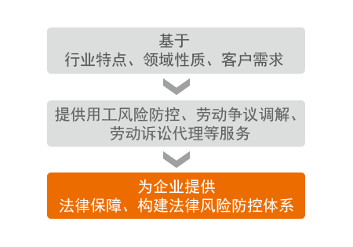

劳动法务咨询
产品介绍
为满足企业劳动法律服务需求，凭借仕邦多年人力资源服务的法律支持经验，我们针对客户的行业特点、领域、性质及客户的实际需求提供多样化的劳动用工法律服务。

产品介绍
- HR新法、案例速递
》向贵司提供新出台的劳动法律法规（电子版）
》定期向贵司发送劳动法案例及分析
》年末提供汇编本（纸质版 - HR法律一般政策咨询
》全年提供电话、QQ、来我司接待等一般性人力资源法律政策咨询
》提供登门法律咨询服务 - HR管理专项服务
》提供制定内部员工手册的咨询服务
》人力资源管理体检服务
》提供制定内部档案管理制度的咨询服务 - HR沙龙活动 》向贵司提供我司举办的各项HR沙龙活动
- 劳动争议调解
》根据实际情况指导企业进行劳动争议的处理，确保结果的合规性
》根据实际情况进行整体评价，并出具报告书 - 劳动诉讼代理
》根据案情指导企业进行证据收集
》根据案情撰写答辩状
》代为参加庭审
服务优势
* 丰富的服务经验
大量劳动争议解决经验、建立劳动风险防控体系经验
* 完善的全国法律服务
覆盖全国的服务系统、综合式服务解决方案
* 良好的政府合作关系
有效的沟通平台、代表企业沟通需求